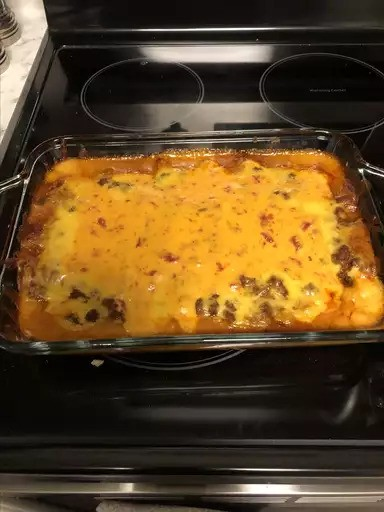

Enchiladas

Ingredients
- Ground Beef - 2 Lbs
- Chili Powder - 2 Tbsp
- Ground Cumin - 1 Tbsp
- Garlic Powder - 1 Tbsp
- Salt - 1 Tsp
- Tomato Sauce - 8 Oz
- Water - 4 Cups
- All-Purpose Flour - 1/2 Cup
- Sugar - 1 1/2 Tsp
- Cooking Oil - 2 Tbsp
- Corn Tortillas - 12
- Shredded Cheese - 4 Cups
Directions
- Preheat oven to 350 degrees.
- Heat ground beef in a large skillet over medium heat. Cook, stirring to crumble, until no longer pink. Drain off grease and season with chili powder, paprika, cumin, garlic powder, and salt. Mix in tomato sauce and 2 cups water. Simmer over low heat.
- Mix remaining water with flour and sugar until flour is dissolved; stir into the simmering meat sauce. Simmer until thickened, about 10 minutes.
- While the sauce is cooking, heat oil in another skillet over medium-high heat. Warm tortillas in hot oil until pliable. Fill each tortilla with a little bit of cheese, and place in a 9x13-inch baking dish, reserving some of the cheese to sprinkle on top. Pour meat sauce evenly over the rolled tortillas. Top with remaining cheese.
- Bake for 25 minutes in the preheated oven, until cheese is melted and lightly browned.